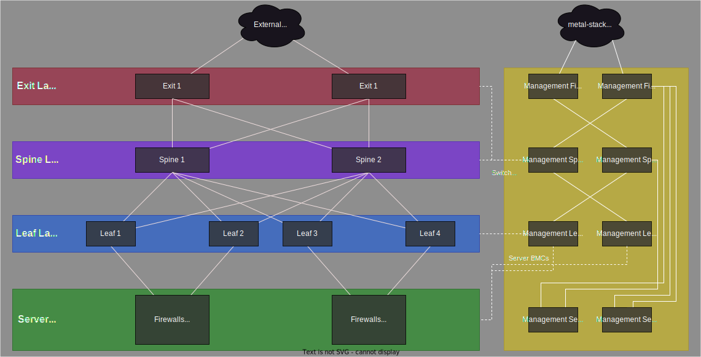
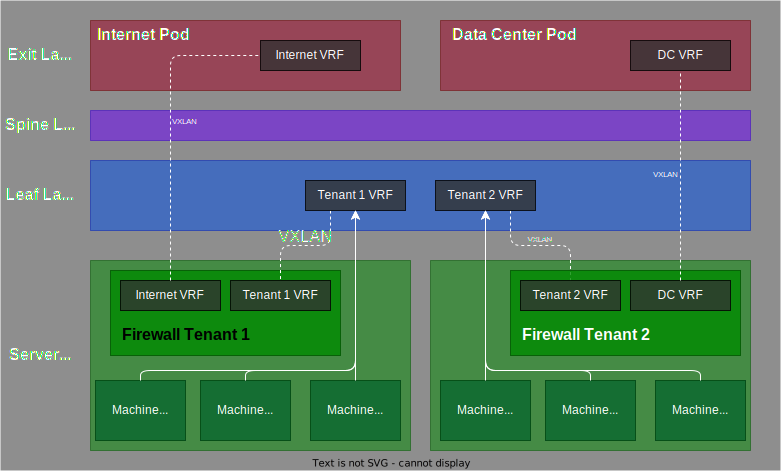

Networking
We spent a lot of time on trying to provide state-of-the-art networking in the data center. This document describes the requirements, ideas and implementation details of the network topology that hosts the metal-stack.
The document is separated into three main sections describing the constraints, theoretical ideas and implementation details.
Requirements
Finding the requirements for this greenfield project was kicked off with a handful of design parameters that included:
- Investigation of the idea of a layer-3 based infrastructure to overcome the drawbacks of traditional layer-2 architectures.
- Application of a routing technology that involves a single stand-alone protocol BGP for operational simplicity.
- Utilization of the overlay virtual network technology EVPN to support cost-effective scaling, efficient network information exchange and a manageable amount of administration effort.
- Applying the routing topology on top of a completely new physical infrastructure that is designed as a CLOS network topology.
Evaluation of those parameters led to more specific requirements:
- Physical Wiring:
- The data center is made of a leaf-spine CLOS topology containing:
- leaf switches
- spine switches
- exit switches
- management server
- management switch
- tenant servers
- tenant firewalls.
- Bare metal servers are dual-attached to leaf switches. The bare metal servers either become tenant servers or firewalls for a group of tenant servers.
- All network switches are connected to a management switch. A management server provides access to this management network.
- The data center is made of a leaf-spine CLOS topology containing:
- Network Operation Characteristics:
- IPv4 based network.
- No IPv6 deployment.
- Utilization of external BGP.
- Numbered BGP only for peerings at exit switches with third parties (Internet Service Provider).
- Overall BGP unnumbered.
- 4-byte private ASN instead of default 2-byte ASN for BGP.
- Network operation relies on SONiC Linux.
- Bleeding edge Routing-to-the-Host/EVPN-to-the-Host with ordinary Linux distributions.
- Layer-3 routing using BGP and VXLAN/EVPN.
- Every VTEP acts as a layer-3 gateway and does routing. Routing is done on both the ingress and the egress VTEP (aka distributed symmetric routing).
- Tenant isolation is realized with VRF.
- Internet Access is implemented with route leak on the firewall servers and during the PXE-Process with route leak on the exit switches.
- MTU 9216 is used for VXLAN-facing interfaces, otherwise MTU 9000 is used.
Furthermore, requirements such as operational simplicity and network stability that a small group of people can effectively support have been identified being a primary focus for building metal-stack.
Concept
The theoretical concept targets the aforementioned requirements. New technologies have been evaluated to apply the best solutions. The process was heavily inspired by the work of Dinesh G. Dutt regarding BGP (bgp-ebook), EVPN (evpn-ebook) and the his 2019 work "Cloud Native Data Center Networking" (O'Reilly), which teaches some interesting basics.
External BGP together with network overlay concepts as EVPN can address the essential demands. These revolutionary concepts are part of the next evolutionary step in data center design. It overcomes common issues of traditional layer 2 architectures (e.g. VLAN limitations, network visibility for operations, firewall requirements) by introducing a layer 3 based network topology.
CLOS
A CLOS topology is named after the pioneer Charles Clos (short: CLOS) who first formalized this approach. CLOS defines a multistage network topology that is used today to improve performance and resilience while enabling a cost effective scalability. A CLOS topology comprises network switches aggregated into spine and leaf layers. Each leaf switch (short: leaf) is connected to all spine switches (short: spine) but there is no direct leaf-to-leaf or spine-to-spine connection (See: picture 1).

Picture 1: Fragment of CLOS to show leaf-spine layer.
This data center network architecture, based on a leaf-spine architecture, is also know as "two-tier" CLOS topology.

Picture 2: Fragment to show a 3-stage, 2-layer CLOS topology.
Tenant servers are dual-attached to the leaf layer in order to have redundancy and load balancing capability (Picture 2). The set of leaves, spine switches and tenant servers define stages. From top down each server is reachable with 3 hops (spine -> leaf -> server). This is why that CLOS design is called a 3-stage CLOS. Consistent latency throughout the data center are an outcome of this design.
It is not only important to have a scalable and resilient infrastructure but also to support planning and operation teams. Visibility within the network is of significant meaning for them. Consequently layer-3 routing in favor of layer-2 bridging provides this kind of tooling.
BGP
For routing the Border Gateway Protocol (BGP), more specific: External BGP was selected. Extensive testing and operational experiences have shown that External BGP is well suited as a stand-alone routing protocol (see: RFC7938).
Not all tenant servers are connected to the same leaf. Instead they can be distributed among any of the leaves of the data center. To not let this detail restrict the intra-tenant communication it is required to interconnect those layer-2 domains. In the context of BGP there is a concept of overlay networking with VXLAN/ EVPN that was evaluated to satisfy the needs of the metal-stack.
BGP Unnumbered
In BGP traditionally each BGP peer-facing interface requires a separate IPv4 address. This consumes a lot of IP addresses. RFC 5549 defines the BGP unnumbered standard. It allows to use interface's IPv6 link local address (LLA) to set up a BGP session with a peer. With BGP unnumbered the IPv6 LLA of the remote is automatically discovered via Router Advertisement (RA) protocol. Important: This does not (!) mean that IPv6 must be deployed in the network. BGP uses RFC 5549 to encode IPv4 routes as reachable over IPv6 next-hop using the LLA. Having unnumbered interfaces does not mean no IPv4 address may be in place. It is a good practice to configure an IP address to the never failing and always present local loopback interface (lo). This lo address is reachable over BGP from other peers because the RFC 5549 standard provides an encoding scheme to allow a router to advertise IPv4 routes with an IPv6 next-hop. BGP unnumbered also has an advantage from security perspective. It removes IPv4 and global IPv6 addresses from router interfaces, thus reducing the attack vector.
To sum it up:
- BGP unnumbered uses IPv6 next-hops to announce IPv4 routes.
- There is no IPv6 deployment in the network required.
- IPv6 just has to be enabled on the BGP peers to provide LLA and RA.
In External BGP, ASN is how BGP peers know each other.
ASN Numbering
Within the data center each BGP router is identified by a private autonomous system number (ASN). This ASN is used for internal communication. The default is to have 2-byte ASN. To avoid having to find workarounds in case the ASN address space is exhausted, a 4-byte ASN (see RFC 6793) that supports up to 95 million private ASNs (4200000000–4294967294, see RFC 6996) is used from the beginning.
ASN numbering in a CLOS topology should follow a model to avoid routing problems (path hunting) due to it's redundant nature. Within a a two-tier CLOS topology the following ASN numbering model is suggested to solve path hunting problems:
- Leaves have unique ASN
- Spines share an ASN
- Exit switches share an ASN
A illustrated example of the background of this architecture decision can be inspected in the chapter "BGP’s ASN Numbering Scheme" ("BGP’S PATH HUNTING PROBLEM") of the previously mentioned "Cloud Native Data Center Networking" book.
To summarize that, one can say: Since all nodes receive or know the physical connection status of all other nodes in the network, the nodes potentially have routing information that they do not know whether they still have up to date, since it takes some time before they are fully distributed in the network. Routes to nodes may actually no longer exist (because not a single link to the node, but the node itself has failed) or the path may have changed. To determine how and whether a particular node can be reached, a path search must therefore be carried out at all its communication partners or BGP routers. Essentially, the sharing of ASNs reduces the transmission of incorrect or outdated path information (this reduces path transmissions and calculations and thus saves resources).
Address-Families
As stated, BGP is a multi-protocol routing protocol. Since it is planned to use IPv4 and overlay networks using EVPN/VXLAN several address-families have to be activated for the BGP sessions to use:
- IPv4 unicast address-family
- L2 EVPN address-family
EVPN
Ethernet VPN (EVPN, see RFC 7432) is an overlay virtual network that connects layer-2 segments over layer-3 infrastructure. EVPN is an answer to common problems of entire layer-2 data centers.
The necessity of EVPN
Challenges such as large failure domains, spanning tree complexities, difficult troubleshooting and scaling issues are addressed by EVPN:
- administration: less routers are involved in configuration (with VLAN every switch on routing-paths needs VLAN awareness). The configuration is less error prone due to the nature of EVPN and the good support in FRR.
- scaling: EVPN overcomes scaling issues with traditional VLANs (max. 4094 VLANs).
- cost-effectiveness: EVPN is an overlay virtual network. Not every switch on the routing path needs EVPN awareness. This enables the use of standard routers (in contrast to traditional VLAN); e.g.: spine switches act only as EVPN information replicator and do not need to have knowledge of specific virtual networks.
- efficiency: EVPN information is exclusively exchanged via BGP (Multiprotocol BGP, see RFC 4760). Only a single eBGP session is needed to advertise layer-2 reachability. No other protocols beneath BGP are involved and flood traffic is reduced to a minimum (no "flood-and-learn", no BUM traffic).
Virtual routing permits multiple network paths without the need of multiple switches. Hence the servers are logically isolated by assigning their networks to dedicated virtual routers using virtual routing and forwarding (short, VRF, see Linux Virtual Routing and Forwarding and SONiC VRF support).
The operation of EVPN
EVPN (technology) is based on BGP as control plane protocol (underlay) and VXLAN as data plane protocol (overlay).
As EVPN is an overlay network, only the VXLAN Tunnel End Points (VTEPs) must be configured. In the case of two-tier CLOS networks leaf switches are tunnel endpoints.
As described earlier, a dedicated VRF is used for each new tenant. VRF enables true multi-tenancy/isolation for routing tables. This is why the same ip-addresses or -networks can be used for tenants with different meanings without collisions or conflicts.
In EVPN routing is assumed to occur in the context of a VRF. VRF enables true multitenancy/isolatation for routing tables. Therewith, VRF is the first step for EVPN configuration and there is a 1:1 relationship between tenant and VRF.
To enable layer-2 connectivity, we need a special interface to route between layer-2 networks. This interface is called Switched VLAN Interface (SVI). The SVI is realized with a VLAN. It is part of a VRF (layer-3).
The VTEP configuration requires the setup of a VXLAN interface. A VLAN aware bridge interconnects the VXLAN interface and the SVI.
Required resources to establish the EVPN control plane:
- VRF: because routing happens in the context of this interface.
- SVI: because remote host routes for symmetric routing are installed over this interface.
- VLAN-aware bridge: because router MAC addresses of remote VTEPs are installed over this interface.
- VXLAN Interface / VXLAN Tunnel Endpoint: because the VRF to layer-3 VNI mapping has to be consistent across all VTEPs)

Picture 3: Required interfaces on the switch to wire up the vrf to swp 1 connectivity with a given vxlan
Integrated routing and bridging (IRB) is the most complex part of EVPN. You could choose between centralized or distributed routing, and between asymmetrical (routing on ingress) or symmetrical (routing on ingress and egress) routing. We expect a lot of traffic within the data center itself which implies the need to avoid zigzag routing. This is why we go with distributed routing model. Further it is recommended to use the symmetric model since it makes the cut in most cases and has advantages in scalability (see "EVPN in the Data Center", Dinesh G. Dutt).
MTU
In a layer-3 network it is important to associate each interface with a proper Maximum Transmission Unit (MTU) to avoid fragmentation of IP packets. Typical modern networks do not fragment IP packets and the introduction of VXLAN adds another additional header to the packets that must not exceed the MTU. If the MTU is exceeded, VXLAN might just fail without error. This already represents a difficult-to-diagnose connectivity issue that has to be avoided.
It is common practice to set the MTU for VXLAN facing interfaces (e.g. inter-switch links) to a value of 9216 to compensate the additional VXLAN overhead and an MTU of 9000 as a default to other interfaces (e.g. server facing ports). The common MTU of 1500 is not sufficient for traffic inside a data center!
VRF
Routing is needed for communication between VXLAN tunnels or between a VXLAN tunnel and an external networks. VXLAN routing supports layer-3 multi-tenancy. All routing occurs in the context of a VRF. There is a 1:1 relation of a VRF to a tenant. Picture 3 illustrates this. Servers A and B belong to the same vrf VRF1. Server C is enslaved into VRF2. There is no communication possible between members of VRF1 and those of VRF2.

Picture 4: Illustration of two distinct routing tables of VRF1 (enslaved: servers A and B) and VRF2 (enslaved: server C)
To leaverage the potential and power of BGP, VRF, EVPN/VXLAN without a vendor lock-in the implementation relies on hardware that is supported by open network operating system: SONiC.
Implementation
Implementation of the network operation requires the data center infrastructure to be in place. To implement a functional meaning for the parts of the CLOS network, all members must be wired accordingly.
Physical Wiring
Reference: See the CLOS overview picture
| Name | Wiring |
|---|---|
| Tenant server (aka Machine) | Bare metal server that is associated to a tenant. Dual-connected to leafs. |
| Tenant firewall | Bare metal server that is associated to a tenant. Dual-connected to leafs. |
| Leaf | Network Switch that interconnects tenant servers and firewalls. Connected to spines. |
| Spine | Network switch that interconnects leafs and exit switches. |
| Exit | Network switch that connects to spines and interconnects to external networks. |
| Management Server | Jump-host to access all network switches within the CLOS topology for administrative purpose. |
| Management Switch | Connected to the management port of each of the network switches. |

Picture 5: This illustration shows an example of a suitable physical wiring inside a metal-stack partition.
Tenant servers are organized into a layer called projects. In case those tenant servers require access to or from external networks, a new tenant server to function as a firewall is created. Leaf and spine switches form the fundament of the CLOS network to facilitate redundancy, resilience and scalability. Exit switches establish connectivity to or from external networks. Management Switch and Management Server are mandatory parts that build a management network to access the network switches for administration.
To operate the CLOS topology, software defined configuration to enable BGP, VRF, EVPN and VXLAN must be set up.

Picture 6: This illustration shows the VRF tenant separation and VRF termination happening on the firewall for the tenant VRF and external network VRFs.
Network Operating Systems
SONiC as the network operating system will be installed on all network switches (leaves, spines, exit switches) within the CLOS topology. SONiC cannot be installed on bare metal servers that require BGP/EVPN but does not have a switching silicon.
Components without a switching silicon are:
- tenant servers
- tenant firewalls
- management server
There exist two paradigms to use BGP and/or VXLAN/EVPN on non switching bare metal servers: BGP-to-the-host and EVPN-to-the-host. Both describe a setup of Free Range Routing Framework (see frrouting.org) and its configuration. FRR seamlessly integrates with the native Linux IP networking stacks.
Starting with an explanation of the tenant server's BGP-to-the-Host helps to get an insight into the setup of the CLOS network from a bottom-up perspective.
Tenant Servers: BGP-to-the-Host
Tenant servers are dual-connected to leaf switches. To communicate with other servers or reach out to external networks they must join a BGP session with each of the leaf switches. Thus, it is required to bring BGP to those hosts (aka BGP-to-the-Host). Each tenant server becomes a BGP router (aka BGP speaker).
BGP-to-the-Host is established by installing and configuring FRR. The required FRR configuration for tenant servers is limited to a basic setup to peer with BGP next-hops:
# /etc/network/interfaces
auto lo
iface lo inet static
address 10.0.0.1/32
auto lan0
iface lan0 inet6 auto
mtu 9000
auto lan1
iface lan1 inet6 auto
mtu 9000Listing 1: Network interfaces of a tenant server.
Listing 1 shows the local interfaces configuration. lan0 and lan1 connect to the leaves. As described, there is no IPv4 address assigned to them (BGP unnumbered). The local loopback has an IPv4 address assigned that is announced by BGP.
The required BGP configuration:
# /etc/frr/frr.conf
frr version 7.0
frr defaults datacenter
log syslog debugging
service integrated-vtysh-config
!
interface lan0
ipv6 nd ra-interval 6
no ipv6 nd suppress-ra
!
interface lan1
ipv6 nd ra-interval 6
no ipv6 nd suppress-ra
!
router bgp 4200000001
bgp router-id 10.0.0.1
bgp bestpath as-path multipath-relax
neighbor TOR peer-group
neighbor TOR remote-as external
neighbor TOR timers 1 3
neighbor lan0 interface peer-group TOR
neighbor lan1 interface peer-group TOR
neighbor LOCAL peer-group
neighbor LOCAL remote-as internal
neighbor LOCAL timers 1 3
neighbor LOCAL route-map local-in in
bgp listen range 10.244.0.0/16 peer-group LOCAL
address-family ipv4 unicast
redistribute connected
neighbor TOR route-map only-self-out out
exit-address-family
!
bgp as-path access-list SELF permit ^$
!
route-map local-in permit 10
set weight 32768
!
route-map only-self-out permit 10
match as-path SELF
!
route-map only-self-out deny 99
!Listing 2: FRR configuration of a tenant server.
The frr configuration in Listing 2 starts with frr defaults datacenter. This is a marker that enables compile-time provided settings that e.g. set specific values for BGP session timers. This is followed by a directive to state that instead of several configuration files for different purposes a single frr.conf file is used: service integrated-vtysh-config. The two interface specific blocks starting with interface ... enable the RA mechanism that is required for BGP unnumbered peer discovery. There is a global BGP instance configuration router bgp 4200000001 that sets the private ASN. The BGP router configuration contains a setup that identifies the BGP speaker bgp router-id 10.0.0.1. This router id should be unique. It is a good practice to assign the local loopback IPv4 as router-id. To apply the same configuration to several interfaces a peer group named TOR is defined via neighbor TOR peer-group. remote-as external activates external BGP for this peer group. To have a fast convergence, limits of default timers are reduced by timer 1 3 section. The two BGP-peer-facing interfaces are enslaved into the peer-group to inherit the peer-group's setup. Activation of IPv4 unicast protocol is completed with address-family ipv4 unicast. To prevent a tenant server from announcing other paths than lo interface a route-map only-self-out is defined. This route map is activated within the ipv4 address family: neighbor TOR route-map only-self-out out.
Application of the route map only-self-out enables to announce only local ip(s). This is to avoid that a tenant server announces paths to other servers (prevents unwanted traffic). To achieve this:
the route-map named
only-self-outpermits only matches against an access list namedSELFaccess list
SELFpermits only empty path announcementsthe path of the tenant server itself has no ASN. It is always empty (see line
*> 10.0.0.2/32 0.0.0.0 0 32768 ?):root@machine:~# vtysh -c 'show bgp ipv4 unicast' BGP table version is 7, local router ID is 10.0.0.2, vrf id 0 Default local pref 100, local AS 4200000002 Status codes: s suppressed, d damped, h history, * valid, > best, = multipath, i internal, r RIB-failure, S Stale, R Removed Nexthop codes: @NNN nexthop's vrf id, < announce-nh-self Origin codes: i - IGP, e - EGP, ? - incomplete Network Next Hop Metric LocPrf Weight Path *= 0.0.0.0/0 lan1 0 4200000012 4200000040 i *> lan0 0 4200000011 4200000040 i *= 10.0.0.1/32 lan1 0 4200000012 4200000001 ? *> lan0 0 4200000011 4200000001 ? *> 10.0.0.2/32 0.0.0.0 0 32768 ? *= 10.0.0.78/32 lan1 0 4200000012 4200000001 ? *> lan0 0 4200000011 4200000001 ? Displayed 4 routes and 7 total pathsThat is why only the self ip (loopback ip) is announced.
To allow for peering between FRR and other routing daemons on a tenant server a listen range is specified to accept iBGP sessions on the network 10.244.0.0/16. Therewith it gets possible that pods / containers like metal-lb with IPs of this range may peer with FRR.
This is the only place where we use iBGP in our topology. For local peering this has the advantage, that we don't need an additional ASN that has to be handled / pruned in the AS-path of routes. Routes coming from other routing daemons look as if they are configured on the tenant server's lo interface from the viewpoint of the leaves. iBGP routes are differently handled than eBGP routes in BGPs best path algorithm. Generally BGP has the rule to prefer eBGP routes over iBGP routes (see 'eBGP over iBGP' ). BGP adds automatically an weight based on the route type. To overcome this issue, we set the weight of iBGP routes to the same weight that eBGP routes have, namely 32768 (set weight 32768). Without this configuration we will only get a single route to the IPs announced via iBGP. So this setting is essential for HA/failover!
Statistics of the established BGP session can be viewed locally from the tenant server via: sudo vtysh -c 'show bgp ipv4 unicast'
To establish this BGP session a BGP setup is required on the leaves as well.
Leaf Setup
Every leaf switch is connected to every spine switch. Tenant servers can be distributed within the data center and thus be connected to different leaves. Routing for tenant servers is isolated in unique VRFs. These constraints imply several configuration requirements for the leaf and spine switches:
- leaves define tenant VRFs
- leaves terminate VXLAN tunnels (aka "VXLAN tunnel endpoint" = VTEP)
The leaf setup requires the definition of a tenant VRF that enslaves the tenant server facing interfaces:
# /etc/network/interfaces
# [...]
iface vrf3981
vrf-table auto
iface swp1
mtu 9000
post-up sysctl -w net.ipv6.conf.swp1.disable_ipv6=0
vrf vrf3981
# [...]Listing 3: Fragment that shows swp1 being member of vrf vrf3981.
There is a VRF definition iface vrf3981 to create a distinct routing table and a section vrf vrf3981 that enslaves swp1 (connects the tenant server) into the VRF. Those host facing ports are also called edge ports.
Additional to the VRF definition the leaf must be configured to provide and connect a VXLAN interface to establish a VXLAN tunnel. This network virtualization begins at the leaves. Therefore, the leaves are also called Network Virtualization Edges (NVEs). The leaves encapsulate and decapsulate VXLAN packets.
# /etc/network/interfaces
# [...]
iface bridge
bridge-ports vni3981
bridge-vids 1001
bridge-vlan-aware yes
iface vlan1001
mtu 9000
vlan-id 1001
vlan-raw-device bridge
vrf vrf3981
iface vni3981
mtu 9000
bridge-access 1001
bridge-arp-nd-suppress on
bridge-learning off
mstpctl-bpduguard yes
mstpctl-portbpdufilter yes
vxlan-id 3981
vxlan-local-tunnelip 10.0.0.11
# [...]Listing 4: Fragment that shows VXLAN setup for vrf vrf3981.
All routing happens in the context of the tenant VRF. To send and receive packets of a VRF, several interface are in place.
A bridge is used to attach VXLAN interface bridge-ports vni3981 and map its local VLAN to a VNI. Router MAC addresses of remote VTEPs are installed over this interface.
The Routed VLAN Interface or Switched Virtual Interface (SVI) iface vlan1001 is configured corresponding to the per-tenant VXLAN interface. It is attached to the tenant VRF. Remote host routes are installed over this SVI. The vlan-raw-device bridge is used to associate the SVI with the VLAN aware bridge. For a packet received from a locally attached host the SVI interface corresponding to the VLAN determines the VRF vrf vrf3981.
The VXLAN interface iface vni3981 defines a tunnel address that is used for the VXLAN tunnel header vlxan-local-tunnelip 10.0.0.11. This VTEP IP address is typically the loopback device address of the switch. When EVPN is provisioned, data plane MAC learning for VXLAN interfaces must be disabled because the purpose of EVPN is to exchange MACs between VTEPs in the control plane: bridge-learning off. EVPN is responsible for installing remote MACs. bridge-arp-nd-suppress suppresses ARP flooding over VXLAN tunnels. Instead, a local proxy handles ARP requests received from locally attached hosts for remote hosts. ARP suppression is the implementation for IPv4; ND suppression is the implementation for IPv6. It is recommended to enable ARP suppression on all VXLAN interfaces. Bridge Protocol Data Unit (BPDU) are not transmitted over VXLAN interfaces. So as a good practice bpduguard and pbdufilter are enabled with mstpctl-bpduguard yes and mstpctl-portbpdufilter yes. These settings filter BPDU and guard the spanning tree topology from unauthorized switches affecting the forwarding path. vxlan-id 3981 specifies the VXLAN Network Identifier (VNI). The type of VNI can either be layer-2 (L2) or layer-3 (L3). This is an implicit thing. A VNI is a L3 VNI (L3VNI) when a mapping exists that maps the VNI to a VRF (configured in /etc/frr/frr.conf) otherwise it is a L2 VNI (L2VNI).
# /etc/frr/frr.conf
# [...]
vrf vrf3981
vni 3981
exit-vrf
#[...]
router bgp 4200000011
# [...]
address-family ipv4 unicast
redistribute connected route-map LOOPBACKS
# [...]
address-family l2vpn evpn
neighbor FABRIC activate
advertise-all-vni
exit-address-family
# [...]
router bgp 4200000011 vrf vrf3981
# [...]
address-family ipv4 unicast
redistribute connected
neighbor MACHINE maximum-prefix 100
exit-address-family
!
address-family l2vpn evpn
advertise ipv4 unicast
exit-address-family
# [...]
route-map LOOPBACKS permit 10
match interface lo
# [...]Listing 5: Leaf FRR configuration.
Listing 5 shows the required FRR configuration of the BGP control plane. Only content not discussed so far is explained. The section vrf vrf3981 contains the mapping from layer-3 VNI to VRF. This is required to be able to install EVPN IP prefix routes (type-5 routes) into the routing table. Further the file contains a global BGP instance router bgp 4200000011 definition. A new setting redistribute connected route-map LOOPBACKS is in place to filter the redistribution of routes that are not matching the local loopback interface. The route-map is defined with route-map LOOPBACKS permit 10. With the configuration line address-family l2vpn evpn, the EVPN address family is enabled between BGP neighbours. advertise-all-vni makes the switch a VTEP configures it in such a way, that all locally configured VNIs should be advertised by the BGP control plane.
The second BGP instance configuration is specific to the tenant VRF router bgp 4200000011 vrf vrf3981. This VRF BGP instance configures the l2vpn evpn address family with advertise ipv4 unicast to announce IP prefixes in BGP's routing information base (RIB). This is required to apply learned routes to the routing tables of connected hosts. The Maximum-Prefix feature is useful to avoid that a router receives more routes than the router memory can take. The maximum number of prefixes a tenant server is allowed to announce is limited to 100 with: neighbor MACHINE maximum-prefix 100.
Spine setup
On the spine switches the setup is quite simple. /etc/network/interfaces contains the loopback interface definition to support BGP unnumbered and listings for connected switch ports to provide proper MTUs (Listing 6). I.e. swp1 is configured with an MTU of 9216 as it is a VXLAN-facing interface.
# /etc/network/interfaces
# [...]
iface swp1
mtu 9216Listing 6: Fragment of spine interface configuration.
The spines are important to forward EVPN routes and transport VXLAN packets between the VTEPs. They are not configured as VTEPs. The FRR configuration only contains the already known global BGP instance configuration router bgp 4200000020 plus the activation of the l2vpn evpn address family address-family l2vpn evpn to enable EVPN type-5 route forwarding (Listing 7).
hostname spine01
username admin nopassword
!
# [...]
interface swp1
ipv6 nd ra-interval 6
no ipv6 nd suppress-ra
!
# [...]
!
router bgp 4200000020
# [...]
!
address-family l2vpn evpn
neighbor FABRIC activate
exit-address-family
!
# [...]Listing 7: Fragment of spine FRR configuration to show the activated L2VPN EVPN address-family.
Tenant Firewalls: EVPN-to-the-Host
In case a tenant server needs to reach out to external networks as the Internet, a tenant firewall is provisioned. The firewall is a bare metal server without a switching silicon. Thus, there is no installation of SONiC. FRR provides the BGP / EVPN functionality known as EVPN-to-the-host. The firewall is configured as a VTEP and applies dynamic route-leaking to install routes of an foreign VRF. The set of routes that are leaked are restricted with route-maps.
As Listing 8 shows, the firewall is configured with VXLAN interfaces as known from the leaf setup. Additionally, a VXLAN setup for VRF vrfInternet is added to provide Internet access. vrfInternet contains a route to the Internet that will be leaked into the tenant VRF.
Traffic that originates from the tenant network 10.0.0.0/22 will be masqueraded before leaving the interface vlanInternet towards the internet.
# /etc/network/interfaces
# [...]
iface bridge
# [...]
iface vlan1001
# [...]
iface vni3981
# [...]
iface vrf3981
# [...]
iface vlanInternet
mtu 9000
vlan-id 4009
vlan-raw-device bridge
vrf vrfInternet
address 185.1.2.3
post-up iptables -t nat -A POSTROUTING -s 10.0.0.0/22 -o vlanInternet -j MASQUERADE
pre-down iptables -t nat -D POSTROUTING -s 10.0.0.0/22 -o vlanInternet -j MASQUERADE
iface vniInternet
mtu 9000
bridge-access 4009
mstpctl-bpduguard yes
mstpctl-portbpdufilter yes
vxlan-id 104009
vxlan-local-tunnelip 10.0.0.40
iface vrfInternet
mtu 9000
vrf-table autoListing 8: Interfaces configuration of firewall to show the VTEP interface configuration.
To install a default route into the routing table of tenant VRF vrf3981 a dynamic route leak is established for it (import vrf vrfInternet). With the help of a route-map import vrf route-map vrf3981-import-map only the default route will be leaked:
root@firewall01:~# vtysh -c 'show ip route vrf vrf3981'
# [...]
VRF vrf3981:
S>* 0.0.0.0/0 [1/0] is directly connected, vrfInternet(vrf vrfInternet), 03:19:26
B>* 10.0.0.1/32 [20/0] via 10.0.0.12, vlan1001 onlink, 02:34:48
* via 10.0.0.11, vlan1001 onlink, 02:34:48
B>* 10.0.0.2/32 [20/0] via 10.0.0.12, vlan1001 onlink, 02:34:49
* via 10.0.0.11, vlan1001 onlink, 02:34:49To receive responses from vrfInternet in vrf3981 a route is leaked into vrfInternet as well (import vrf vrf3981) restricted with the route-map vrfInternet-import-map that allows leaking of the tenant routes as well as internet prefixes used on worker nodes of the tenant. To limit the prefixes that are announced from the firewall within the global BGP instance a route-map only-self-out is defined and applied within the ipv4 and l2vpn evpn address family. Together with the definition of an as path access list bgp as-path access-list it avoids the announcement of prefixes to non VRF BGP peers.
# /etc/frr/frr.conf
!
vrf vrf3981
vni 3981
!
vrf vrfInternet
vni 104009
!
# [...]
!
router bgp 4200000040
# [...]
!
address-family ipv4 unicast
# [...]
neighbor FABRIC route-map only-self-out out
exit-address-family
!
!
router bgp 4200000040 vrf vrf3981
# [...]
address-family ipv4 unicast
redistribute connected
import vrf vrfInternet
import vrf route-map vrf3981-import-map
# [...]
address-family l2vpn evpn
advertise ipv4 unicast
# [...]
router bgp 4200000040 vrf vrfInternet
# [...]
address-family ipv4 unicast
redistribute connected
import vrf vrf3981
import vrf route-map vrfInternet-import-map
# [...]
address-family l2vpn evpn
advertise ipv4 unicast
# [...]
bgp as-path access-list SELF permit ^$
!
route-map only-self-out permit 10
match as-path SELF
!
route-map only-self-out deny 99
!
route-map LOOPBACKS permit 10
match interface lo
!
ip prefix-list vrf3981-import-prefixes seq 100 permit 0.0.0.0/0
!
route-map vrf3981-import-map permit 10
match ip address prefix-list vrf3981-import-prefixes
!
route-map vrf3981-import-map deny 99
!
ip prefix-list vrfInternet-import-prefixes seq 100 permit 10.0.0.0/22 le 32
ip prefix-list vrfInternet-import-prefixes seq 101 permit 185.1.2.0/24 le 32
ip prefix-list vrfInternet-import-prefixes seq 102 permit 185.27.0.0/27 le 32
!
route-map vrfInternet-import-map permit 10
match ip address prefix-list vrfInternet-import-prefixes
!
route-map vrfInternet-import-map deny 99
!
line vty
!Listing 9: FRR configuration of a tenant firewall to show route leak and prefix announcement filtering.
Exit Switch
Traffic to external networks is routed via the firewalls to the exit switch. The exit switch, as an exception, connects to the Internet Service Provider using numbered BGP. Numbered BGP implies to assign IPv4 addresses to network interfaces (See Listing 10, swp1). Interface swp1 is enslaved into vrf vrfInternet to include the port that is connected to the ISP within the VRF that is expected to contain a way into the Internet. The exit switch is configured to be a VTEP to terminate traffic coming from the firewall VRF vrfInternet.
# /etc/network/interfaces
# [...]
iface swp1
mtu 9000
vrf vrfInternet
address 172.100.0.2/30
# [...]
iface vlan4000
mtu 9000
address 10.0.0.71/24
vlan-id 4000
vlan-raw-device bridge
# [...]
iface vlanInternet
# [...]
iface vniInternet
# [...]
iface vrfInternet
# [...]Listing 10: Fragment of interfaces configuration of exit switch.
The configuration of FRR is equivalent to the previously discussed ones. It contains a global BGP instance configuration that enables IPv4 unicast and l2vpn evpn address families. The vrfInternet BGP instance defines neighbor 172.100.0.1 peer-group INTERNET to use "old style BGP" transit network.
# [..]
vrf vrfInternet
vni 104009
!
# [...]
router bgp 4200000031
bgp router-id 10.0.0.31
neighbor FABRIC peer-group
neighbor FABRIC remote-as external
neighbor FABRIC timers 1 3
# [...]
!
address-family ipv4 unicast
neighbor FABRIC activate
redistribute connected route-map LOOPBACKS
exit-address-family
!
address-family l2vpn evpn
neighbor FABRIC activate
advertise-all-vni
exit-address-family
!
router bgp 4200000031 vrf vrfInternet
bgp router-id 10.0.0.31
bgp bestpath as-path multipath-relax
neighbor INTERNET peer-group
neighbor INTERNET remote-as external
neighbor INTERNET timers 1 3
neighbor 172.100.0.1 peer-group INTERNET
!
address-family ipv4 unicast
neighbor INTERNET route-map PREPEND-PATH-TO-DISFAVOR-IN in
neighbor INTERNET route-map PREPEND-PATH-TO-DISFAVOR-OUT out
exit-address-family
!
address-family l2vpn evpn
advertise ipv4 unicast
exit-address-family
!
route-map LOOPBACKS permit 10
match interface lo
!
route-map PREPEND-PATH-TO-DISFAVOR-IN permit 10
set as-path prepend last-as 2
!
route-map PREPEND-PATH-TO-DISFAVOR-OUT permit 10
set as-path prepend last-as 2
!
vrf mgmt
ip route 10.0.0.0/24 10.0.0.71 nexthop-vrf default
exit-vrf
!
ip route 0.0.0.0/0 192.168.0.254 nexthop-vrf mgmt
!
line vty
!Listing 11: Fragment of FRR configuration on exit switch to give an example for numbered BGP and route leak.
In addition to the standard BGP setup the exit switches have configured static route leak to support internet access during PXE. There is one route leak from default VRF into the mgmt VRF defined with: ip route 0.0.0.0/0 192.168.0.254 nexthop-vrf mgmt and another one from mgmt VRF into the default VRF: ip route 10.0.0.0/24 10.0.0.71 nexthop-vrf default. The first one adds a default route into the default VRF and the second one routes traffic destined to the PXE network back from mgmt VRF into the default VRF.
To reach out into external networks each of the exit nodes joins a BGP session with a distinct external router. There is a different latency to each of these routers. To favor routes of exit nodes connected with lower latency over exit nodes with higher latency two route maps PREPEND-PATH-TO-DISFAVOR-IN and PREPEND-PATH-TO-DISFAVOR-OUT are added to high latency exit nodes. These route maps apply actions to prolong the path of the incoming and outgoing routes. Because of this path extension BGP will calculate a lower weight for these paths and favors paths via other exit nodes. It is important to know that within an address family only one route map (the last) will be applied. To apply more than one actions within a route-map the required entries can be applied to a single route-map.
PXE Boot Mode
Before a bare metal server can act as tenant server or tenant firewall, it has to be provisioned. Within the Metal domain, this provisioning mode is called "PXE Mode" since it is based on Preboot eXecution Environment (PXE). PXE uses protocols like DHCP. This requires all bare metal servers that need provisioning to be located in a layer-2 domain where DHCP is available. This domain is a VLAN vlan4000. A DHCP server for PXE Mode is installed on the exit switches to work in this specific VLAN.
# /etc/default/isc-dhcp-server
INTERFACES="vlan4000"Listing 13: DHCP server configuration of exit switches.
As shown in listing 13, the PXE DHCP server is located on the exit switches and enforced to bind to interface vlan4000. This represents a layer-2 separation that allows only DHCP clients in the same VLAN to request IP addresses. Only unprovisionned bare metal servers are configured to be member of this VLAN. Thus unwanted or accidental provisionning is impossible.
To provide vlan4000 on the leaves (that face the bare metal servers) the exit and leaf switches are configured as VTEPs and share an interface configuration that contains the required interfaces (Listing 13). Since no EVPN routing is in place vni104000 is configured as an L2 VNI (there is no mapping for this VNI in /etc/frr/frr.conf).
# /etc/network/interfaces
# [...]
iface bridge
bridge-ports vni104000 [...]
bridge-vids 4000 [...]
bridge-vlan-aware yes
iface vlan4000
# [...]
iface vni104000
# [...]Listing 13: Interfaces configuration on exit and leaf switches to show DHCP/PXE related fragments.
On the leaf switches the bare metal server facing ports are configured as VLAN access ports to carry the traffic for only the PXE VLAN vlan4000 (listing 14)to separate unprovisioned from other bare metal servers.
# /etc/network/interfaces
# [...]
auto swp1
iface swp1
mtu 9000
bridge-access 4000
# [...]Listing 14: VLAN access setup for bare metal server facing ports on leaves.
Once a bare metal server is provisioned it is deconfigured from PXE VLAN vlan4000 to avoid accidental or unwanted provisioning.
During provisioning bare metal servers get internet access via the management network of the exit switches. This is because the exit switches are announced as DHCP gateway to the DHCP clients.
Management Network
To manage network switches beside the out-of-band system console access a further management access is required. For this purpose the concept of Management VRF is applied. The Management VRF is a subset of VRF. It provides a separation between out-of-band management network and the in-band data plane network by introducing another routing table mgmt. SONiC supports eth0 to be used as the management interface.
To enable and use the Management VRF all switches have to be connected via their eth0 interface to a management-switch. The management switch is connected to a management server. All access is established from within the management server. Logins to the switch are set into the Management VRF context once the Management VRF is enabled.